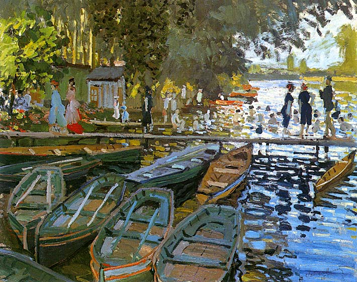
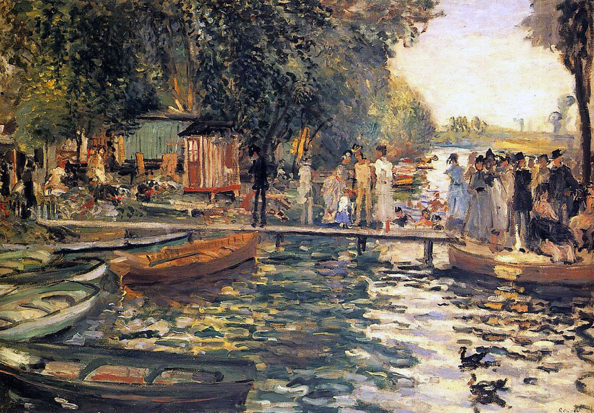

<head>
<meta charset="UTF-8" />
<meta name="keywords" content="drawing, painting" />
<meta name="description" content="drawings by Sunjy" />
<title>Sunjy</title>
<link rel="shortcut icon" type="image/x-icon" href="../../mImages/mCommon/favicon.ico" media="screen" />
<link rel="stylesheet" type="text/css" href="../../mCsses/mCommon/mCssA.css" />
<link rel="stylesheet" type="text/css" href="../../mCsses/mCommon/mCssB.css" />
<link rel="stylesheet" type="text/css" href="../../mCsses/mCommon/mCssC.css" />
<link rel="stylesheet" type="text/css" href="../../mCsses/mCommon/mCssD.css" />
<link rel="stylesheet" type="text/css" href="../../mCsses/mContent/mCssA.css" />
<link rel="stylesheet" type="text/css" href="../../mCsses/mContent/mCssB.css" />
<link rel="stylesheet" type="text/css" href="../../mCsses/mContent/mCssC.css" />
<link rel="stylesheet" type="text/css" href="../../mCsses/mContent/mCssD.css" />
</head>
<script type="text/javascript" src="../../mScripts/mContent/mContentAA.js" /></script>
<script type="text/javascript" src="../../mScripts/mContent/mContentAB.js" /></script>
<script type="text/javascript" src="../../mScripts/mContent/mContentAC.js" /></script>
<script type="text/javascript" src="../../mScripts/mContent/mContentAD.js" /></script>
<script type="text/javascript"></script> 
<script type="text/javascript">
document.write('<div class="mImgAbsolute"></div>');
/*
document.write('<p class="mFontSizeBColor" />From a white paper...</p>');
document.write('<table class="center"><tr><td>');
document.write('');
document.write('</td></tr></table>');
*/
</script>


<script type="text/javascript">
document.write('<p class="mFontSizeBColor" />Bathers at La Grenouillère </p>');
document.write('<p class="mFontSizeSColor" />Bathers at La Grenouillère by Claude Monet was painted during the summer of 1869, Monet and Renoir painted together at La Grenouillère.<br><br>It was a resort on the river Seine some 12 kilometers west of Paris. It had become a popular weekend retreat from the city during the 1860s.<br><br>Monet made several oil sketches at the resort, including this picture, in preparation for a large painting of the site that he planned to exhibit.<br><br>Painted quickly these studies have a directness and immediacy, Monet was painting what he saw, without any attempt to compose a scene.<br><br>Monet concentrated on the repetitive elements, the ripples on the water, the foliage, the boats, the human figures to weave a fabric of brushstrokes that deliver a robust descriptive quality.<br></p>');
document.write('<table class="center" /><tr><td>');
document.write('<br>It was a resort on the river Seine some 12 kilometers west of Paris. It had become a popular weekend retreat from the city during the 1860s.<br><br>Monet made several oil sketches at the resort, including this picture, in preparation for a large painting of the site that he planned to exhibit.<br><br>Painted quickly these studies have a directness and immediacy, Monet was painting what he saw, without any attempt to compose a scene.<br><br>Monet concentrated on the repetitive elements, the ripples on the water, the foliage, the boats, the human figures to weave a fabric of brushstrokes that deliver a robust descriptive quality.<br>" />');
document.write('</td></tr></table>');
document.write('<p class="mFontSizeBColor" />La Grenouillère</p>');
document.write('<p class="mFontSizeSColor" />“La Grenouillère” by Pierre-Auguste Renoir depicts the La Grenouillère resort promoted as “Trouville-sur-Seine”, it was located on the Seine near Bougival, easily accessible by train from Paris and had just been favored with a visit by Emperor Napoleon III with his wife and son.<br><br>4 Paintings created side by side, at the same time by Claude Monet and Pierre-Auguste Renoir<br>•“La Grenouillère” by Claude Monet – Metropolitan Museum of Art, NY<br>•La Grenouillère by Pierre-Auguste Renoir – Nationalmuseum, Stockholm<br>•“Bathers at La Grenouillère” by Claude Monet – National Gallery, London<br>•“La Grenouillère” by Pierre-Auguste Renoir – Oskar Reinhart Collection, ‘Am Römerholz’, Winterthur<br></p>');
document.write('<table class="center" /><tr><td>');
document.write('<br>4 Paintings created side by side, at the same time by Claude Monet and Pierre-Auguste Renoir<br>•“La Grenouillère” by Claude Monet – Metropolitan Museum of Art, NY<br>•La Grenouillère by Pierre-Auguste Renoir – Nationalmuseum, Stockholm<br>•“Bathers at La Grenouillère” by Claude Monet – National Gallery, London<br>•“La Grenouillère” by Pierre-Auguste Renoir – Oskar Reinhart Collection, ‘Am Römerholz’, Winterthur<br>" />');
document.write('</td></tr></table>');
</script>


